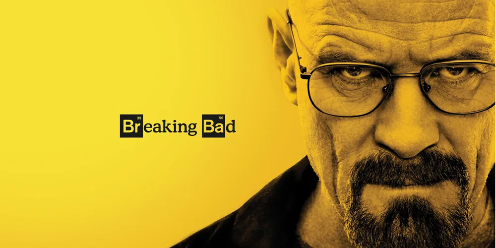

Series Favoritas
- Breaking Bad 
Sinopsis
Breaking Bad sigue la historia de Walter White, un profesor de química de secundaria con problemas económicos que recibe un diagnóstico de cáncer terminal. Desesperado por asegurar el futuro de su familia, decide usar sus conocimientos científicos para fabricar metanfetamina junto a un exalumno, Jesse Pinkman. A medida que su negocio crece, Walter se transforma de un hombre común y honesto en alguien cada vez más peligroso, entrando en un mundo de crimen, violencia y decisiones que cambian su vida para siempre.
Trailer:
Soundtrack
Sinopsis
Stranger Things cuenta la historia de un grupo de niños en el pueblo de Hawkins, donde comienzan a ocurrir sucesos extraños después de la desaparición de uno de ellos, Will Byers. Mientras lo buscan, descubren a Eleven, una niña con poderes telequinéticos que escapa de un laboratorio secreto. Juntos enfrentan criaturas, experimentos ocultos y una dimensión oscura llamada The Upside Down, mientras el pueblo intenta ocultar la verdad.
Trailer:
Soundtrack

Sinopsis
Game of Thrones se desarrolla en los reinos de Westeros, donde varias familias poderosas luchan por el control del Trono de Hierro, el símbolo máximo de poder. Mientras la ambición y las traiciones crecen entre las casas nobles, una amenaza mucho más peligrosa se levanta en el norte: los Caminantes Blancos. Al mismo tiempo, al otro lado del mar, Daenerys Targaryen busca recuperar el trono que le fue arrebatado, reuniendo aliados y dragones. La serie mezcla política, guerra, fantasía y conflictos personales, mostrando cómo el poder puede unir o destruir a quienes lo desean.
Soundtrack
Soundtrack
Sinopsis
Diario de Vampiros sigue la vida de Elena Gilbert, una adolescente que intenta superar la muerte de sus padres. Todo cambia cuando conoce a Stefan Salvatore, un misterioso joven que en realidad es un vampiro. Su relación se complica aún más con la llegada de Damon, el hermano mayor de Stefan, también vampiro, más oscuro y peligroso. A lo largo de la historia, Elena descubre secretos sobrenaturales, se enfrenta a brujas, hombres lobo y antiguos enemigos, mientras su vida se ve atrapada entre el amor, el peligro y decisiones que cambiarán su mundo para siempre.